Rosenkrans Urban Gardening
Discover the joys of gardening and cooking what you sow!
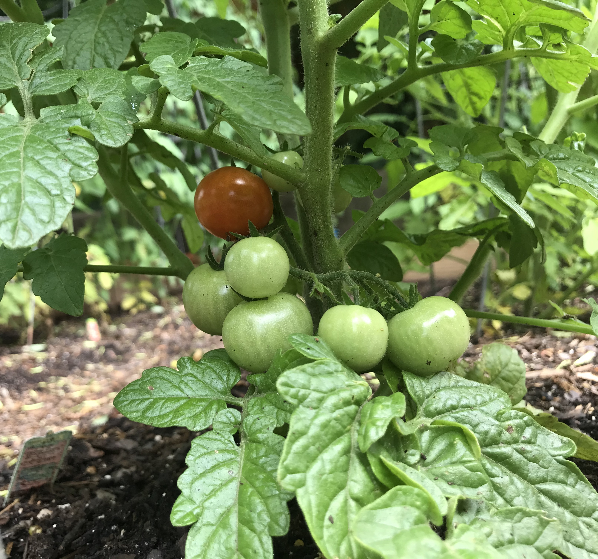Contact me: mark.rosenkrans@gmail.com
Garden Pictures
Early in the season

 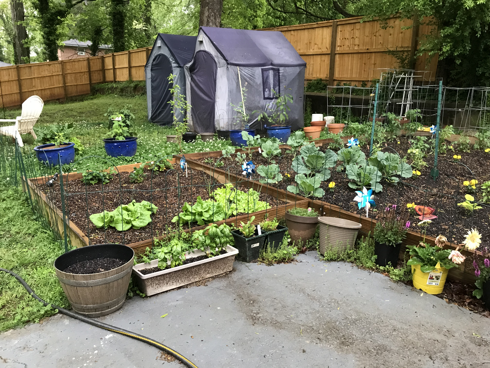
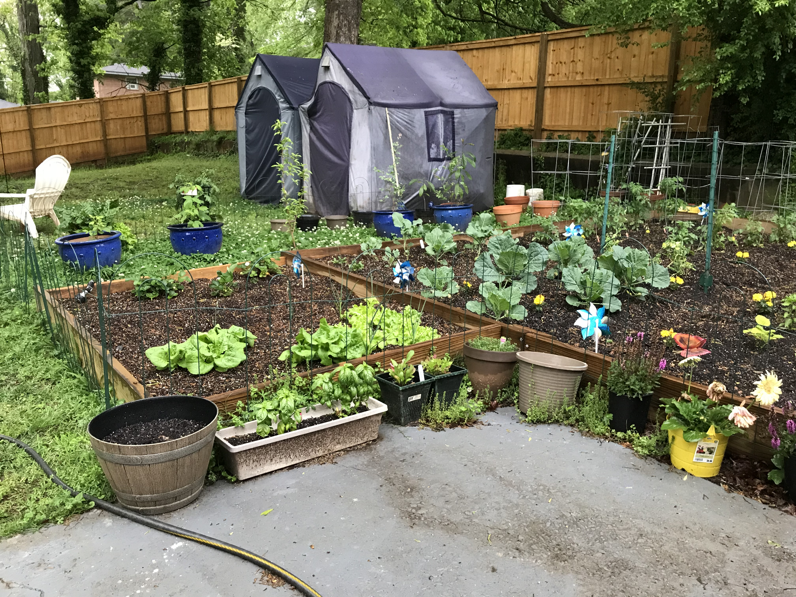
Later in the season
 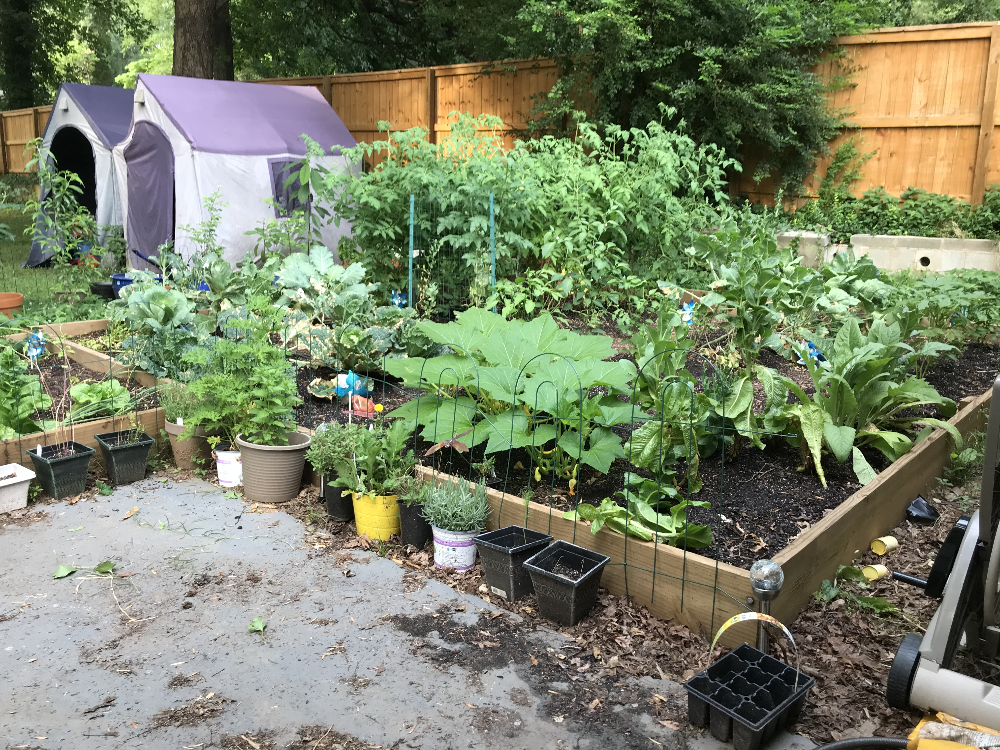
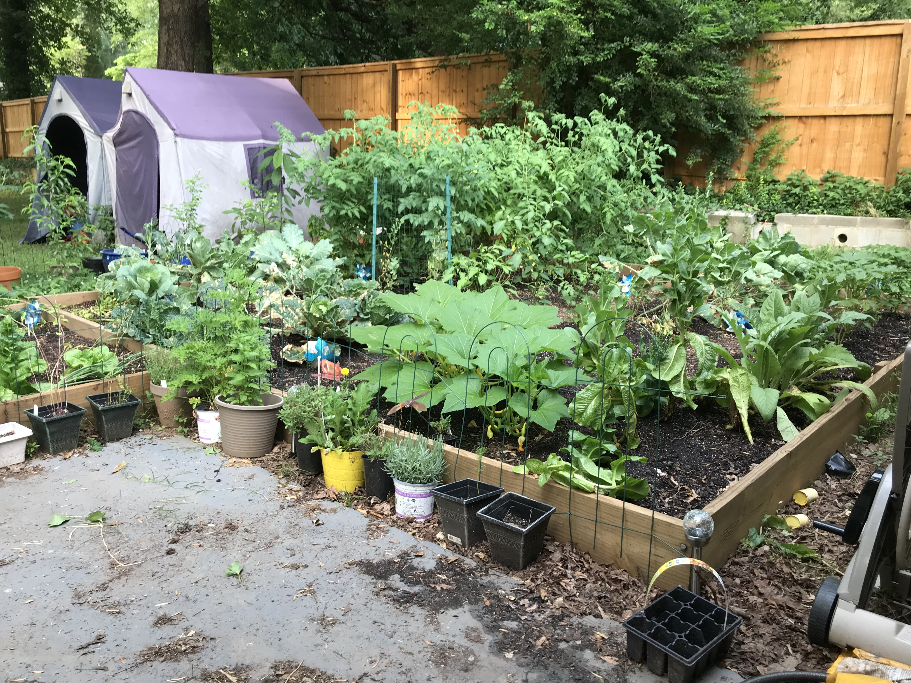
Some close-ups
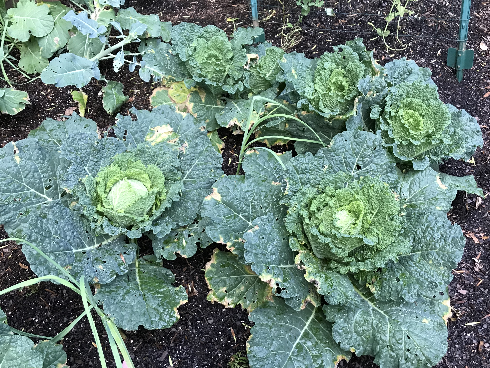 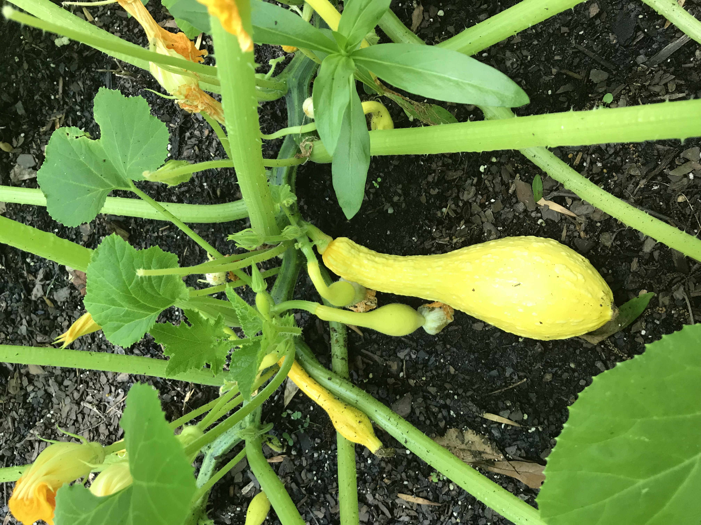Recipes
MARK'S SQUASH CASSEROLE
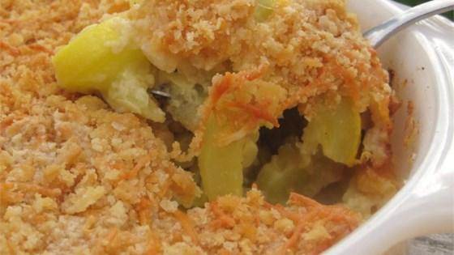- 6-7 yellow squash
- 2 Cups shredded sharp cheddar cheese
- 2 Stacks Ritz Crackers
- 1 1/2 Cups milk
- 4 eggs
- 1 tsp pepper
- 1 stick butter, melted
Cook squash until mushy and drain
In a mixing bowl, add: squash, 1 1/2 cups of shredded chese, 1 stack of Ritz cracker crumbs, milk, eggs, pepper, 2/3 stick melted butter. Mix well. Pour into a greased backing dish. Sprinkle with 1/2 cup of cheese, 1 stack of cracker crumbs, and 1/3 stick of melted butter. Bake at 325 for 30 minutes or until golden brown
BACON BUTTER BRUSSELS SPROUTS
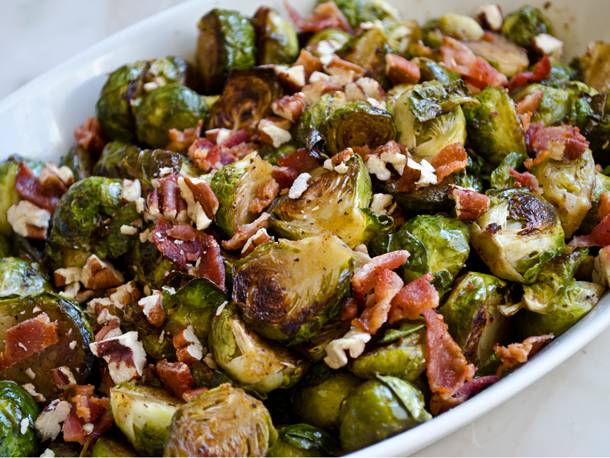- Bacon
- Brussels sprouts
- Butter
- Peanuts or hazlenuts, chopped
- Swiss cheese, shredded
- Balsamic vinegar
- Peanut oil
- Sage leaves, fried
Cook bacon until crispy. Melt butter in a cast iron skillet. Add Brussels sprouts halved, cut side down in butter. Cook 15 minutes. Place Brussels sprouts in a small bowl. Sprinkle nuts on top. Sprinkle cheese on top. Mix balsamic vinegar and peanut oil and drizzle over dish. Add fried sage leaves.
DUTCH BLACKBERRY PIE
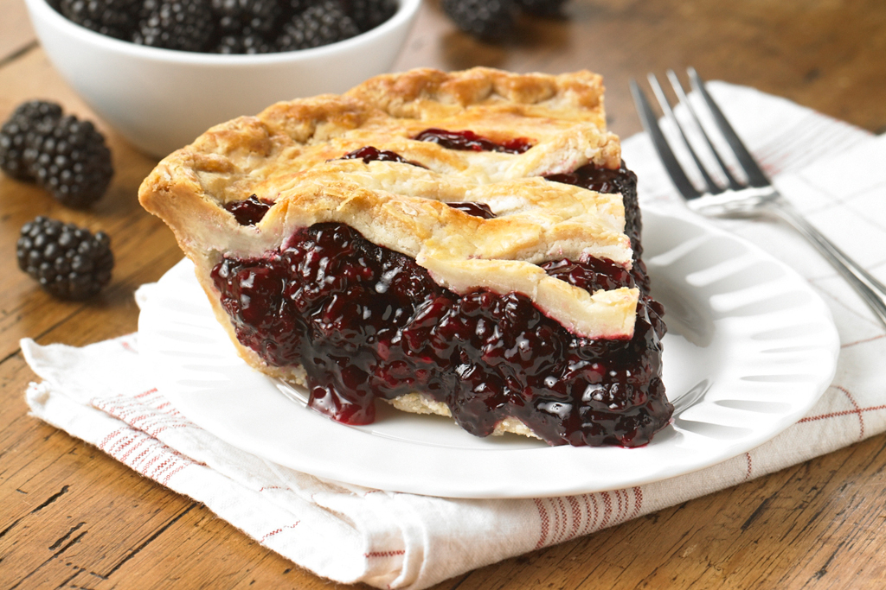- 3 Cups blackberries
- 1 Cup sour cream
- 2 Tablespoons sugar
- 1/8 Teaspoon salt
- 1 Cup flour
- 2 Tablespoons bread crumbs
- 1 1/4 Cups sugar
- 1 Tablespoon melted butter
- 1 Unbaked pie crust
Note: If the berries are thornless, add a bit more sugar and milk
Put berries in the crust. Mix sour cream, sugar, salt, and flour in a small bowl. Spoon mixture over berries. Mix bread crumbs, sugar, and melted butter and sprinkle over top of pie. Bake at 450 for 10 minutes, then 350 for 30 minutes.
BROILED TOMATOES AU GRATIN
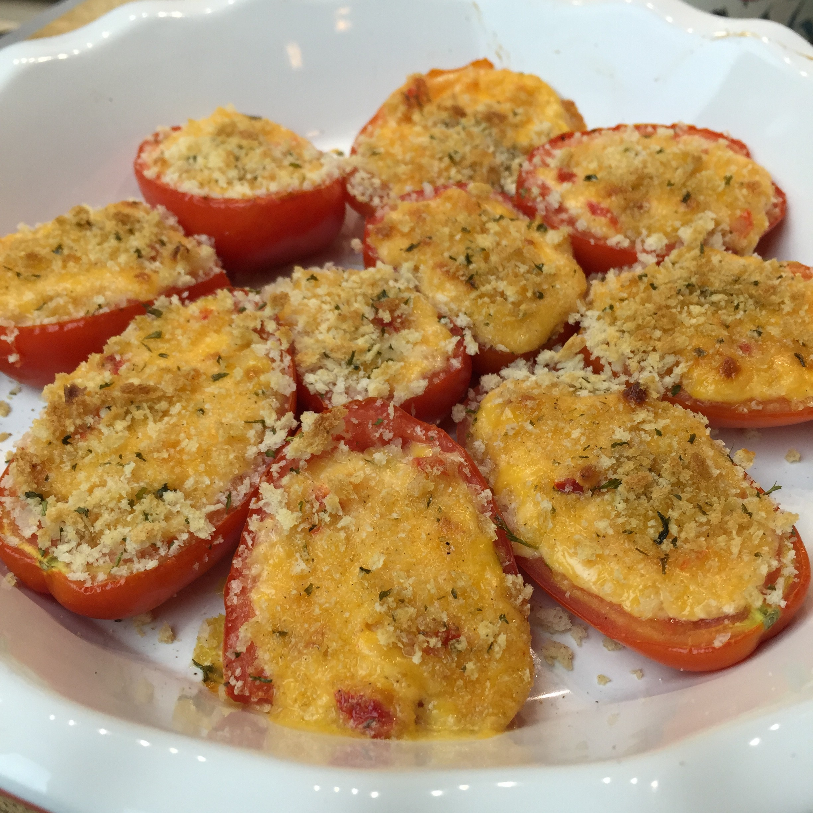- 3 large tomatoes, cut into ½” slices
- ½ lb bacon, diced
- 1 medium onion, chopped
- ¼ lb shredded swiss or mozzarella
- 1 T dried basil
- 2 T dried parsley
- salt and freshly ground pepper
Cook bacon until slightly crisp, drain and set aside. Saute onions in that pan until soft. Mix the bacon, onion, cheese, and spices. Preheat the broiler. Arrange the tomatoes on an oiled broiler pan and sprinkle the top with salt and pepper. Top each tomato slice with some of the bacon mixture and broil the slices just until the cheese melts. Serve hot. Makes about 8 servings
(unless you love them as much as we do, then, about 6).
BLUEBERRY RASPBERRY COBBLER
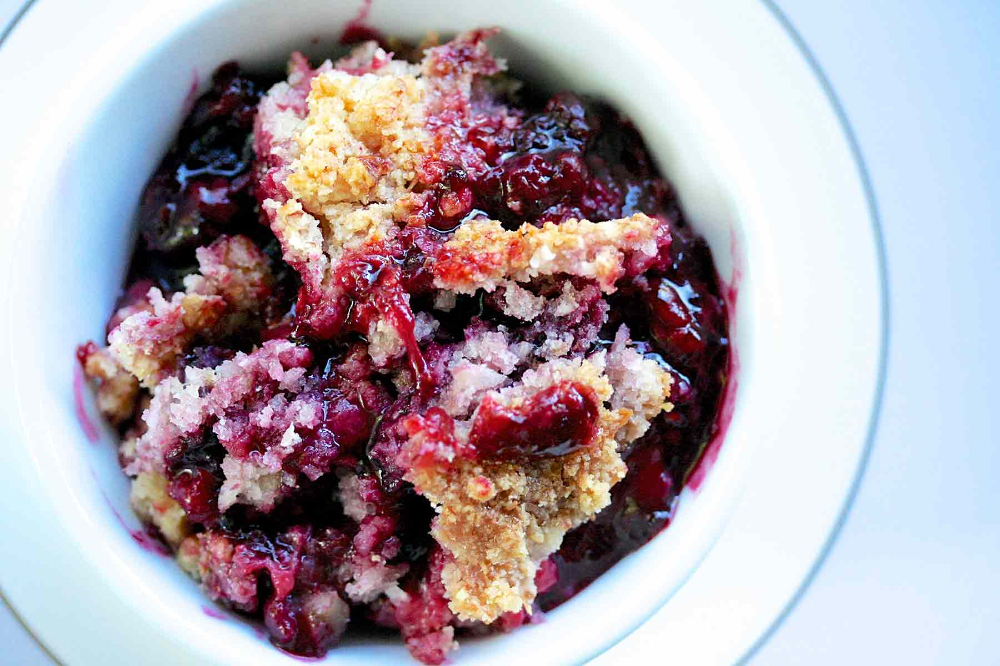- 4 Cups fresh berries
- 3/4 to 1 Cup sugar
- 3 Tablespoons all purpose flour
- 1/2 Grated lemon peel
- 1/2 Teaspoon grated lemon peel
- 1/2 Teaspoon ground cinnamon or nutmeg
- Dash salt
- 1 Teaspoon lemon juice
- 1 Tablespoon butter
First, prepare cobbler topping (recipe below) and set aside. Combine the sugar, flour, cinnamon, and salt. Pour over the berries, sprinkle with lemon peel and cinnamon or nutmeg, and stir to mix. Finally, sprinkle with the lemon juice and dot with the butter. Spoon on cobbler topping in six mounds. Bake at 400 for 35-40 minutes, checking at about 25.
COBBLER TOPPING
- 1 Cup all purpose flour
- 2 Tablespoons sugar
- 1 1/2 baking powder
- 1/4 Teaspoon salt
- 1/4 Cup butter
- 1/4 Cup milk
- 1 slightly beaten egg
Sift together the flour, sugar, baking powder, and salt. Cut in the butter until mixture resembles coarse crumbs. In a separate bowl, combine the milk and the egg. Add liquids all at once to dry ingredients, stirring just to moisten. Set aside.
GAZPACHO
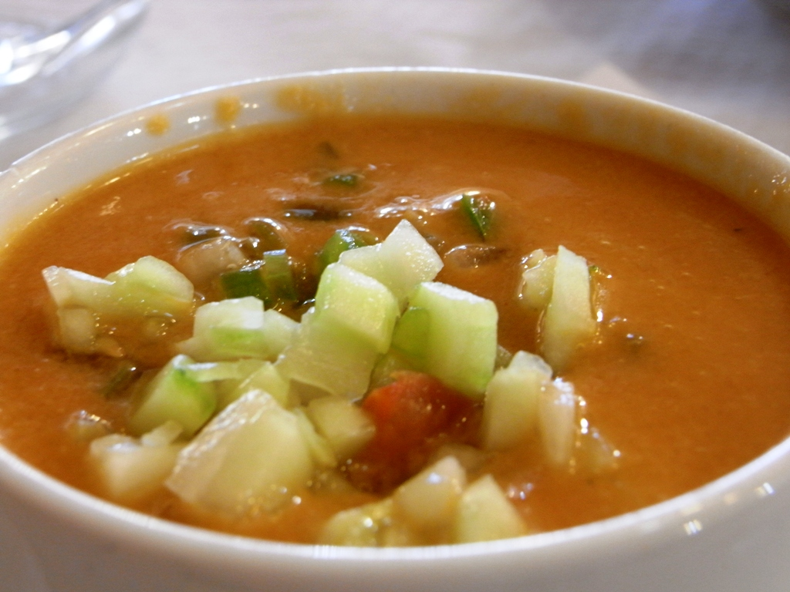- 4 big ripe tomatoes, skinned
- 1 big cucumber, peeled and seeded
- 1 green or red pepper, chopped
- 1 jalapeno, seeded
- 1 garlic clove, pressed/minced
- Handful fresh basil or parsley
- 1/4 Cup olive oil
- 2 Tablespoons Worchestershire sauce
- 2 Tablespoons balsammic vinegar
- 4 Tablespoons lime juice
- 1 Teaspoon kosher salt
- Few grinds of pepper
- 1/2 Teaspoon cumin
Fill a 6-quart pot halfway full of water, set over high heat and bring to a boil. Make an X with a paring knife on the bottom of the tomatoes. Drop the tomatoes into the boiling water for 15 seconds, remove and transfer to an ice bath and allow to cool until able to handle, approximately 1 minute. Remove and pat dry. Peel, core and seed the tomatoes. When seeding the tomatoes, place the seeds and pulp into a fine mesh strainer set over a bowl in order to catch the juice. Press as much of the juice through as possible and then add enough bottled tomato juice to bring the total to 1 cup. Place the tomatoes and juice into a large mixing bowl. Add the cucumber, bell pepper, red onion, jalapeno, garlic clove, olive oil, lime juice, balsamic vinegar, Worcestershire, cumin, salt and pepper and stir to combine. Transfer 1 1/2 cups of the mixture to a blender and puree for 15 to 20 seconds on high speed. Return the pureed mixture to the bowl and stir to combine. Cover and chill for 2 hours and up to overnight. Serve with chiffonade of basil.
GARLIC VEGETABLE SOUP
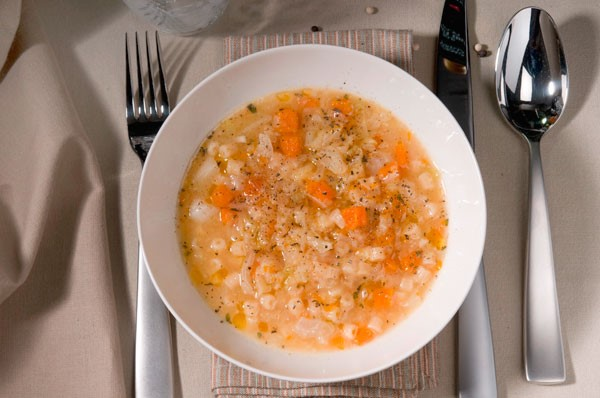- 1 Tablespoon olive oil
- 1 Stalk celery, chopped
- 1/3 Med cabbage, shredded
- 1 Diced Italian tomato
- 1/2 Teaspoon minced garlic
- 10 baby carrots, chopped
- 1/4 Green pepper, chopped
- 3 Cups chicken broth
- 1/2 Cup ditalini or tiny shell pasta
- Soy sauce
- Garlic salt
- Parsley
- Fresh ground black pepper
- White pepper
Heat the oil in a large pot over medium heat. Saute the carrots, pepper, celery and cabbage in the oil for about 8 minutes, stirring well. Sprinkle with soy sauce and a bit of salt while cooking.Raise heat to high and pour in the broth and tomatoes. Spice to taste. Bring to a boil, reduce heat to low, cover and simmer for 1 hour.Remove lid, stir in noodles, garlic and black pepper and heat for 10-15 minutes, or until macaroni is tender. Remove from heat and serve with thick slices of buttered French bread.
SUMMER VEGETABLE LASAGNA
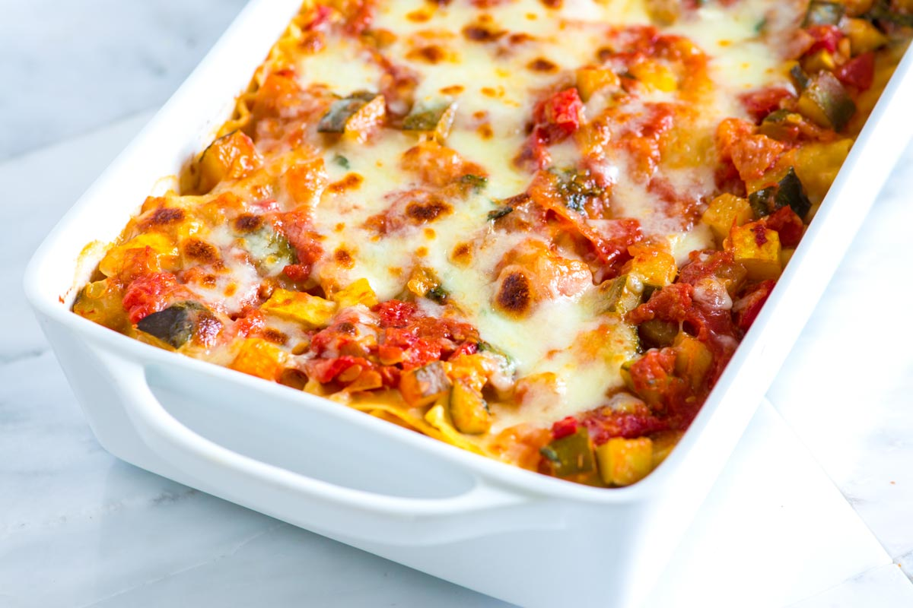- 2 Medium zucchinis
- 1 Pound white cheese
- 1 Large red onion
- 2 Large tomatoes
- Several small yellow squash
- 5-6 Sliced banana peppers
- Oregano
- Rosemary, crushed
- Several slices uncooked bacon
- Loaf country style bread, unsliced
Spray 8x8 cooking dish w/ pam, preheat oven to 375. Cover bottom of dish w/ sliced zucchini and yellow squash; sprinkle with oregano and salt. Layer sliced onion, then slices of tomato, follow with peppers. Sprinkle tomatoes and peppers with rosemary. Cover with a thick layer of sliced or grated cheese. Repeat these layers once. Top with a final layer of squash, then with an overlapped layer of the raw bacon. Cook (covered w/ foil) until done, about 90 min, then uncover and broil on high for 5-10 min. Slice the bread into thick pieces, butter lightly and sprinkle with garlic salt, and liberally with Parmesan cheese. Broil, serve with lasagna. Serves 4-6 Also good with green peppers, one or the other squash, and maybe with winter squash. Serving it over rice is a delicious variation.
About Me
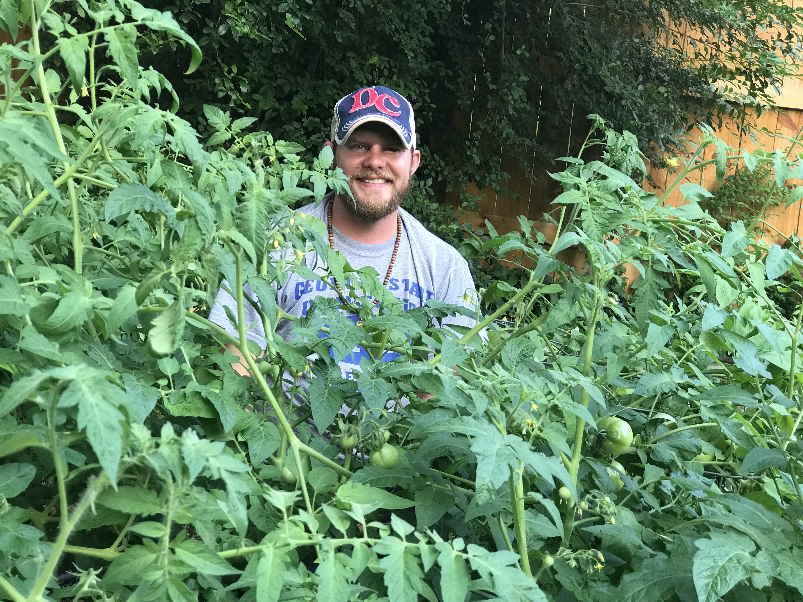
My name is Mark Rosenkrans and I have had an urban garden for 6 years. This season, I decided to try growing many things I have never tried before. Planting in two separate locations in Atlanta, I've learned the hard way how to deal with pests of all types. This has only made me appreciate and love this hobby even more.
Tips and tricks:
Tomato worms? Use B.t. - an organic spray that won't harm your crops
Slugs? Use Garden Safe Slug and Snail Bait
Contact me: mark.rosenkrans@gmail.com